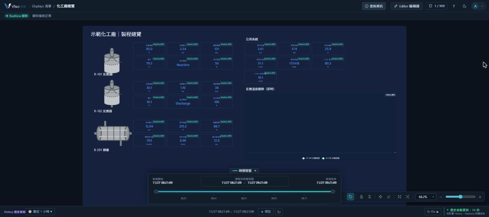

Runtime 即時監看
Runtime 將 Display 轉換為持續更新的監看畫面：即時資料只顯示現在，歷史資料依同一個時間情境串連圖面、時間標記、Quick Trend 與 Data Analysis；有回寫表單時也能在這裡送出設備設定值。本章示範畫面為虛構的「示範化工廠」。
登入與保存登入
使用 VL Client 前先登入；勾選「保存登入」後，關掉瀏覽器再打開不必重新登入。同一個帳號可以在多台裝置同時登入，每台登入中的裝置占 1 點授權。
- 開啟組織提供的 VL Client 網址。
- 輸入帳號與密碼。
- 在共用電腦以外的個人裝置，可勾選「保存登入」。
- 點「登入」，進入 Display 清單。
注意：登入失敗時畫面顯示「登入失敗，請檢查帳號與密碼。」。共用電腦請不要勾選保存登入，離開時從右上使用者選單登出。點數不足或被管理員強制登出時，需要重新登入。
開啟 Runtime
從 Display Library 或 Studio 進入 Runtime，查看已儲存圖面的即時資料與互動功能。
- 進入 Display Library，找到要監看的 Display。
- 點選卡片的「開啟」、縮圖或名稱。
- 也可以在 Studio 上方點選「Runtime」。
- 等待畫布與資料載入完成；暫時連不上伺服器時會自動重試，仍失敗時顯示「重新載入」。
Runtime 會顯示已儲存的圖面、目前資料與時間列。
看不到圖面或資料：先確認 Display 檢視權限、資料權限、圖面是否已儲存，以及所選時間範圍是否有資料。
認識 Runtime 畫面
Runtime 由上方導覽、即時狀態列、中央圖面、浮動工具列與下方時間列組成。

| 區域 | 用途 |
|---|---|
| 上方導覽 | 返回 Displays 清單、「查詢資訊」（查看實際查詢條件與回傳統計）、「Editor 編輯器」、授權使用狀況、「?」網址參數說明、明暗主題、使用者選單；有 RWD 版面時另有「Canvas／RWD」切換。 |
| 即時狀態列 | 「Realtime 即時」與資料接收狀態（例如「資料接收正常」）。 |
| 中央圖面 | 顯示數值、趨勢、表格、狀態及其他已配置元件。 |
| 浮動工具列 | 收合工具列、回寫表單、資料標籤、固定畫布、全螢幕模式、移動畫布、開啟資料分析、符合螢幕、符合物件與縮放。 |
| 時間列 | 「History 歷史查詢」時間範圍、起訖時間、現在／暫停、重新整理、自動更新頻率與更新狀態。 |
預期結果：所有歷史資料元件依下方同一個時間範圍取得資料；即時元件持續顯示現在的值。
即時與歷史資料標示
Runtime 在元件右上標示資料類型，讓監看人員分辨「現在的值」與「時間範圍內的歷史資料」。
| 標示 | 意思 |
|---|---|
| Realtime 即時 | 來自 DataGateway 即時推送，只顯示現在；不受下方時間範圍影響。上方狀態列顯示資料接收狀態。 |
| History 歷史 | 依下方時間範圍查詢；「歷史自動更新」只影響 History，Realtime 持續接收。 |
- 查看元件右上的 Realtime 或 History 標記。
- 不需要標記時，點浮動工具列「顯示或隱藏 Realtime/History 資料標籤」。
- 即時資料不可使用時（權限不足或已停用），元件會顯示提示；請聯絡管理者確認即時 DataBinding 權限。
顯示模式與工具列記憶
顯示模式用來適應中控大屏、一般桌面及不同尺寸的顯示設備。「固定畫布」「全螢幕模式」「移動畫布」的設定會被記住，重新整理或切換 Display 都沿用。

| 工具 | 用途 |
|---|---|
| 固定畫布（以捲軸瀏覽） | 以固定畫布及捲軸方式瀏覽內容。 |
| 全螢幕模式（隱藏上下列） | 隱藏上下列，讓圖面使用更多顯示空間。 |
| 移動畫布 | 拖曳觀看目前未顯示的畫布區域。 |
| 符合螢幕 | 縮放整張畫布以符合可用視窗。 |
| 符合物件 | 依圖面中實際物件範圍調整縮放。 |
| 縮放 | 縮小、放大、縮放滑桿與「縮放預設」。 |
| 收合工具列 | 把工具列收成一個按鈕，再點展開。 |
工具列設定記在這個瀏覽器；網址參數的設定優先於記住的設定，見 網址參數。
手機與平板 RWD 顯示
Display 有 RWD 版面時，手機與平板開啟會自動改用 RWD 版面，以卡片上下或格子排列，不需要縮放整張畫布。

- 在手機或平板的瀏覽器開啟 VL Client 並登入。
- 開啟有「RWD」標記的 Display，畫面自動使用 RWD 版面。
- 在桌機上要檢查 RWD 版面時，點上方「Canvas／RWD」切到「RWD」。
沒有 RWD 版面的 Display 在手機上仍以 Canvas 顯示，可用縮放與移動畫布瀏覽。RWD 版面製作見 RWD 版面編輯。
Runtime 網址參數與「?」說明
Runtime 網址可以帶參數，指定隱藏工具列、縮放比例與查詢時間，方便把 Display 嵌入其他系統。上方「?」按鈕說明可用的參數，並可複製目前 Display 的範例網址。

| 參數 | 可用值 | 作用 |
|---|---|---|
mode | iframe | 隱藏上方區域、工具列與時間區間列，只留下畫面內容。 |
toparea | show／hide | 顯示或隱藏上方區域。 |
toolbar | show／hide | 顯示或隱藏工具列。 |
timewindow | show／hide | 顯示或隱藏時間區間列。 |
zoomsize | 0～200 | 縮放百分比；0 為符合視窗。 |
starttime／endtime | 時間表示式或 yyyyMMddHHmmss | 時間區間的開始與結束；結束為 * 表示到現在並持續更新。 |
- 開啟 Runtime，點上方「?」。
- 參考參數表，在網址的
?後面加上參數，多個參數用&連接，例如?mode=iframe。 - 點「複製目前 Display 範例網址」，貼到其他系統的嵌入設定。
優先順序：網址參數 > iframe 模式預設值 > 此瀏覽器保存的工具列開關。參數值無法辨識時會忽略該參數，畫面照常開啟。
維護中畫面
管理者把系統切換為「維護中」時，Client 會在 30 秒內顯示「系統維護中」畫面：目前暫停讀取資料、回寫與編輯。維護結束後會自動回到原本的畫面，不需要重新登入。
- 看到「系統維護中」時，不需要操作，畫面每 30 秒自動確認一次並顯示最後確認時間。
- 維護結束後，畫面自動回到原本的 Display。
維護期間無法開啟 Runtime 查詢、送出回寫或編輯 Display。切換方式見後台 運作中／維護中。
全域時間 Filter
全域時間 Filter 決定 Runtime 歷史資料元件與分析功能使用的共同時間情境。可使用最近時間快捷值，或切換日曆區間、自訂及擴充條件。
- 點選下方目前的時間範圍，例如「最近 1 小時」。
- 在「最近時間」選擇 5 分鐘至 30 天等快捷範圍。
- 需要固定起訖時間時，切換「日曆區間」。
- 需要相對時間運算時，切換「自訂」，輸入開始與結束條件，例如
*-1h到*；「今天」「昨天」依瀏覽器所在時區的午夜計算。 - 管理者設定了班別等條件時，切換「擴充條件」一鍵套用，見 班別一鍵切換。
- 套用後確認下方顯示的實際起訖時間。
注意：改變全域時間會重新查詢歷史資料元件；範圍愈長，畫面需要處理的資料量通常愈大。即時元件不受影響。
班別一鍵切換
管理者在 Admin「Client 設定」設定的擴充條件（例如早班、中班、夜班），會出現在時間範圍的「擴充條件」頁籤，一鍵切換查詢區間。

- 點下方時間範圍按鈕。
- 切換到「擴充條件」頁籤。
- 點要查看的班別，例如「早班」。
- 確認下方起訖時間已換成該班別的區間。
尚未開始的班別按鈕為停用。管理者修改條件後，Runtime 頁面重新整理才會生效。條件設定見 Client 設定。
互動式時間窗
時間窗除了選擇範圍，也能控制目前情境是否持續跟隨現在時間。

- 點下方中央「時間視窗」展開時間軸，拖曳兩端調整區間。
- 點選「現在」可切換即時跟隨或暫停，保留目前時間情境進行查看。
- 點選「↻」立即重新載入目前範圍。
- 開啟右下更新頻率選單（例如「15s」），選擇自動更新間隔。
- 從右下狀態確認「歷史自動更新」是否進行中，以及最近完成時間。
預期結果：暫停時，時間範圍不再向前移動；恢復後，範圍重新跟隨現在時間。即時資料不受暫停影響。
開啟 Data Analysis
Data Analysis 整合時間點比較與 Quick Trend，讓使用者不離開 Runtime 就能分析目前情境。

- 點選浮動工具列的「開啟資料分析」；圖示數字代表目前已建立的時間標記數量。
- 在上方選擇「趨勢分析」或「快速趨勢」。
- 完成分析後點選「← 返回」回到 Runtime 圖面。
- 需要重新開始時點選「清除分析」。
Quick Trend
Quick Trend 可加入畫面使用中的標籤，並切換折線、點、長條或面積圖。

- 開啟 Data Analysis，點選「快速趨勢」。
- 點選「＋加入標籤」，在右側「選擇標籤」搜尋並勾選，點「完成」。
- 選擇折線、點、長條或面積呈現方式。
- 使用下方全域時間 Filter 改變分析範圍。
- 不需要標籤時點標籤旁的「×」，或點選「清除」。
資料範圍：標籤清單以目前 Display 已使用且帳號有權限的資料為基礎。
建立時間標記
時間標記把趨勢或表格上的某一個時間保存為可操作的分析物件。
- 在 Runtime 找到可互動的趨勢或表格時間位置。
- 點選要保留的時間點。
- 依需要繼續點選其他時間點。
- 確認工具列「開啟資料分析」圖示的數量同步增加。
- 點選該圖示進入趨勢分析。
注意：時間標記是目前分析工作的選取內容，不會改寫原始資料；需要所選時間範圍內有歷史資料的趨勢或表格才能點選。
管理與比較時間標記
已選時間可保留多個分析點，再搭配一個或多個標籤形成比較表。
- 在「已選時間」檢查時間、順序及來源元件。
- 點選項目右側「×」移除個別時間，或點選「清除時間」。
- 在「已選標籤」點選「＋加入標籤」。
- 從目前畫面使用中的標籤選擇一個或多個項目，點選「完成」。
- 在「比較結果」檢查各時間點的原始值與變化。
預期結果：比較表依所選時間、標籤、基準與比較模式顯示結果。
時間範圍彙整
Runtime 依全域時間範圍與 Display 中元件的設定，將長時間序列整理為可閱讀的區間結果。
- 在全域時間 Filter 選擇要分析的起訖範圍。
- 查看已設定時間分組的表格、趨勢、長條圖或其他元件。
- 確認元件顯示的時間區間與單位。
- 切換較短或較長範圍，確認結果隨共同時間情境更新。
設定責任：平均、加總、最大值、最小值、筆數及時間分組等彙整方式在 Studio 的元件屬性中設定；Runtime 使用者主要調整分析時間範圍。
分析設定
分析設定控制數值如何對齊到時間標記，以及各時間點如何與基準比較。

| 設定 | 選項與用途 |
|---|---|
| 顯示 | 原始值、比較值或兩者。 |
| 時間對齊 | 最近值、上一筆、下一筆、內插或精確。 |
| 最大時間差 | 自動、1 分鐘、5 分鐘、30 分鐘、1 小時或無限制；限制可接受資料與標記時間的距離。 |
| 比較模式 | 差值、百分比變化、比率、指數或與前值差異。 |
| 基準 | 指定哪一個已選時間作為比較基準。 |
- 先建立至少一個時間標記並加入至少一個標籤。
- 選擇顯示原始值、比較值或兩者。
- 依資料頻率選擇時間對齊方式與最大時間差。
- 選擇比較模式及基準時間。
- 確認表格數值、缺值與變化方向符合預期。
判讀原則：資料更新頻率不一致時，不宜直接使用過小的最大時間差；需要逐筆完全相符時才選擇「精確」。
設備回寫表單
Display 設定了回寫表單時，可以在 Runtime 檢視設備目前值並送出新的設定值。送出前會再確認權限與 DG 限制，完成後顯示逐欄結果與設備讀回。

- 點浮動工具列「回寫表單」；有多張表單時在上方分頁切換。
- 「1 填寫」：在要變更的欄位輸入新值（數值）或選擇開啟／關閉（Bool）；點欄位右側「×」清除輸入，右上「讀取」重新讀取目前值。
- 點「下一步：確認」。
- 「2 確認清單」：只列出修改過的欄位，顯示確認時的目前值與新值；確認無誤後點「確認送出」。
- 「3 結果」：查看請求編號、逐欄寫入結果（例如「寫入成功」）與設備讀回（例如「讀回相符」）。
- 需要再送一次點「新的操作」；要追查同一筆點「查證原筆結果」；完成後點「關閉」。
送出成功不代表設備已改值，請以設備讀回結果為準。回寫目標未設定的表單會顯示「回寫目標未設定」，不能送出；系統維護中也無法送出。
表單欄位、範圍與權限由圖面設計者與管理者設定，見 回寫表單設定 與後台 DataGateway 即時。